- 年份
- —
- 品类
- 潮汕鲜牛肉火锅
- 做了什么
01 / 思路
品牌的背后是品类
取「牛小丫」里的“牛”作创意点，突出牛这个传播方向，再结合火锅的属性，把牛的形和锅的轮廓整合在一起。第一版的关键词是健康、体面、精致。
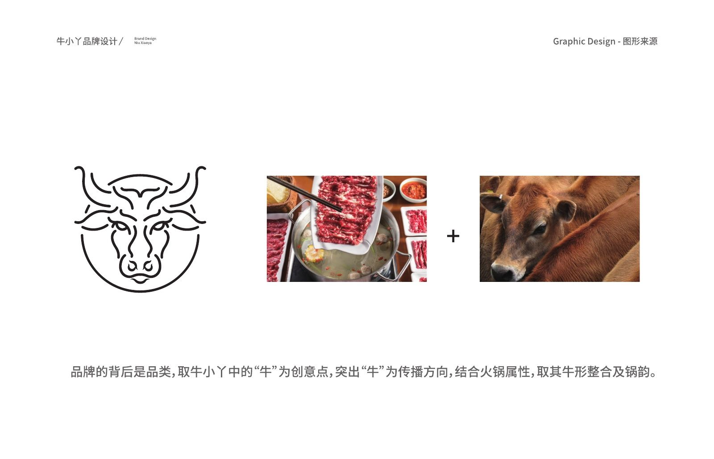
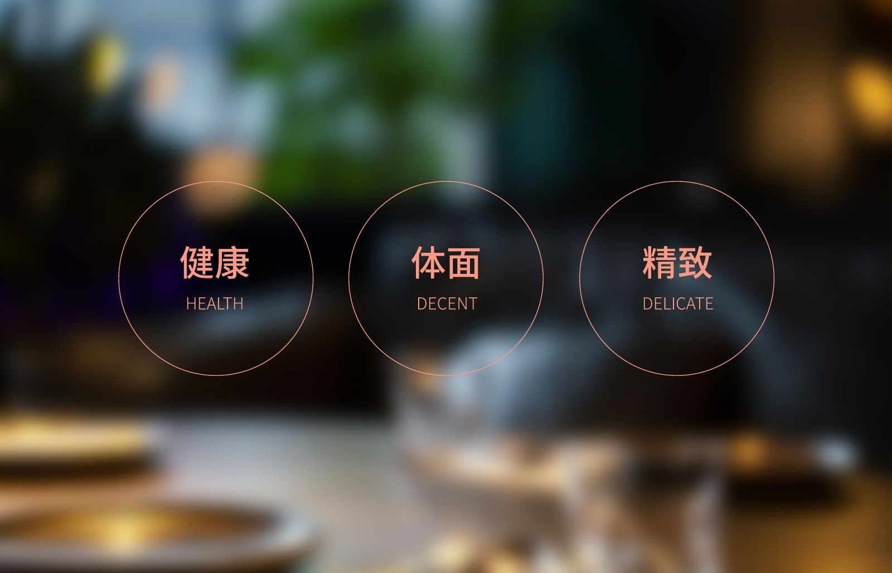
02 / 系统
网格上的牛头和字标
牛头标志用圆和直线网格构建，字标在同一套网格上校正。色彩来自三张照片：红叶、秋林和一面建筑立面。
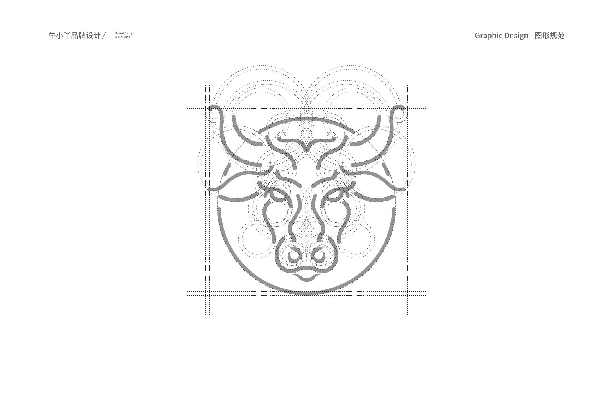
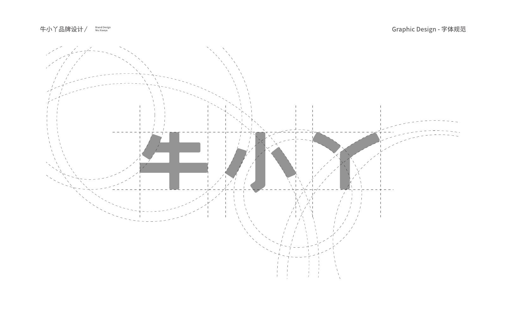
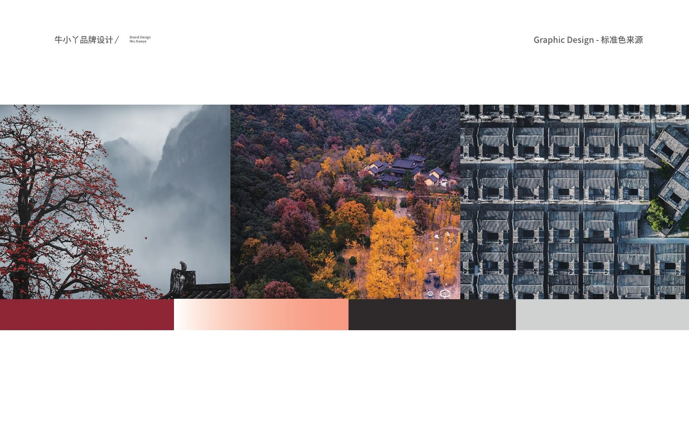
03 / 落地
第一版：门头、事务用品和包装
第一版延展到门头、名片信封等事务用品、易拉罐、包装纸和圆形挑牌。
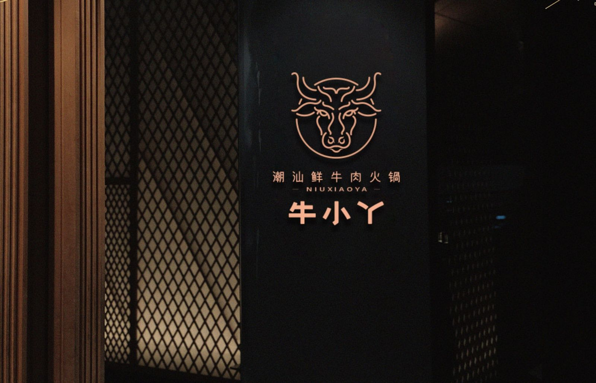
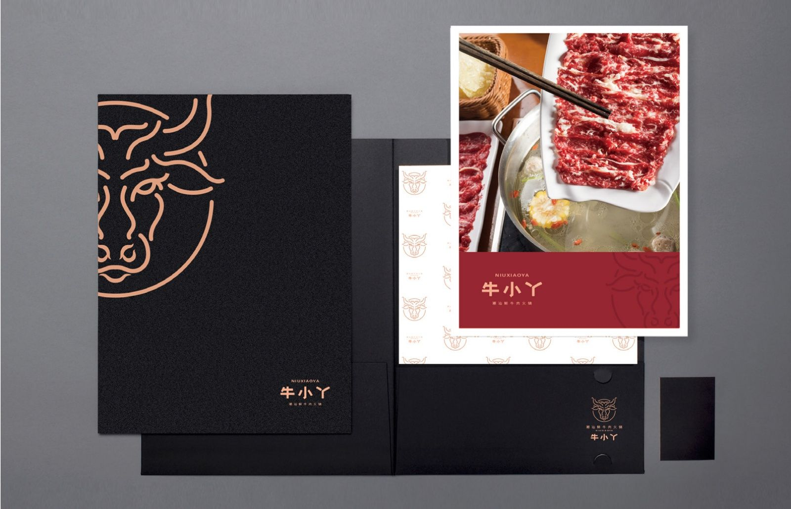
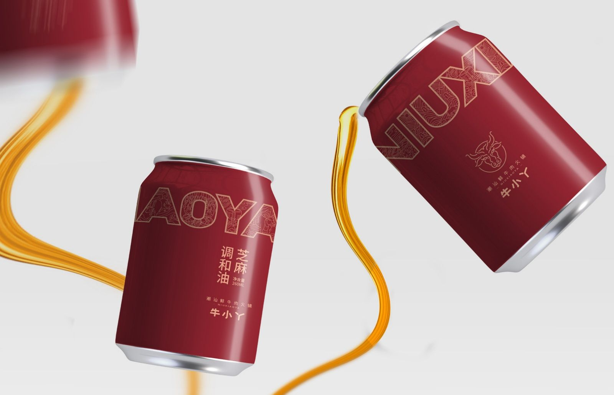
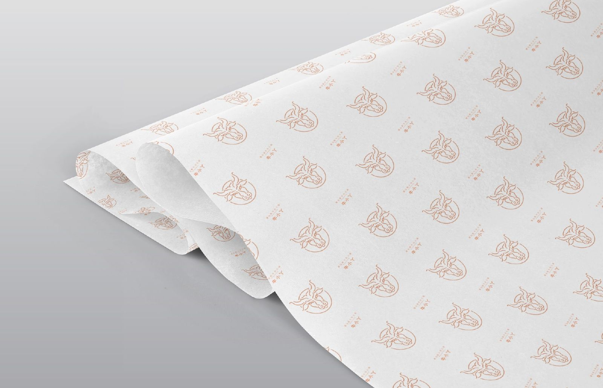
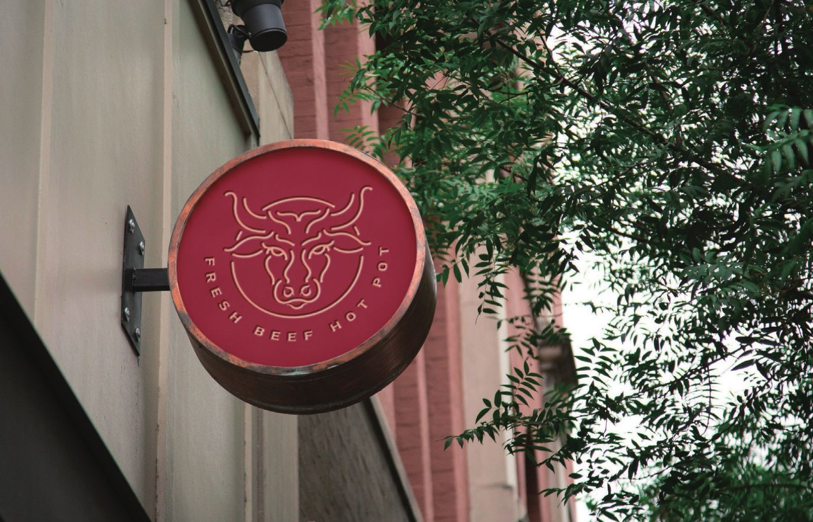
04 / 系统
第二版：更有态度的牛
第二版换成卡通牛头，关键词改为品质、时尚、自信、有态度、新鲜、肉嫩；口号是「好牛出好肉，好肉养好身」，并写明「拒绝腌制、拒绝冷冻、拒绝过夜」。
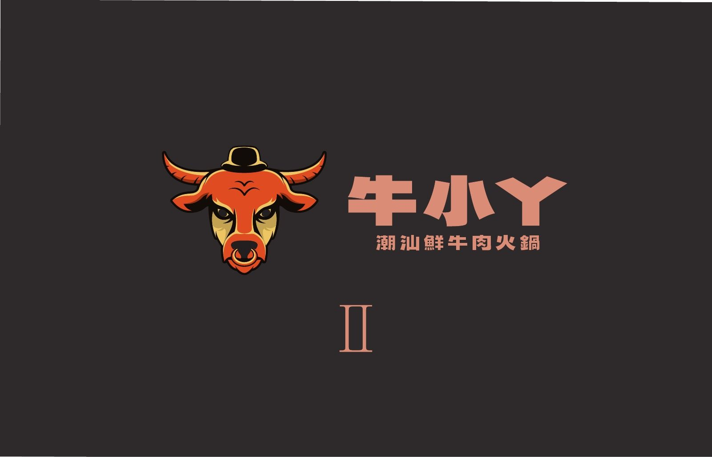
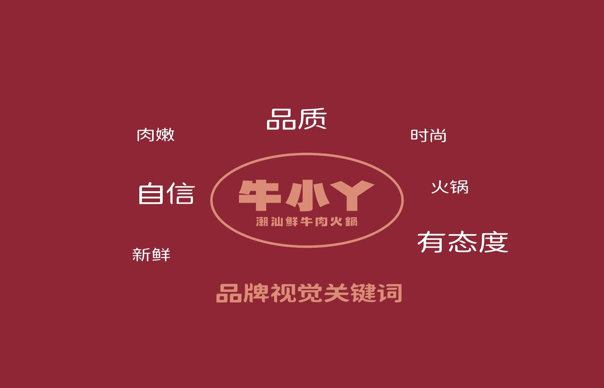
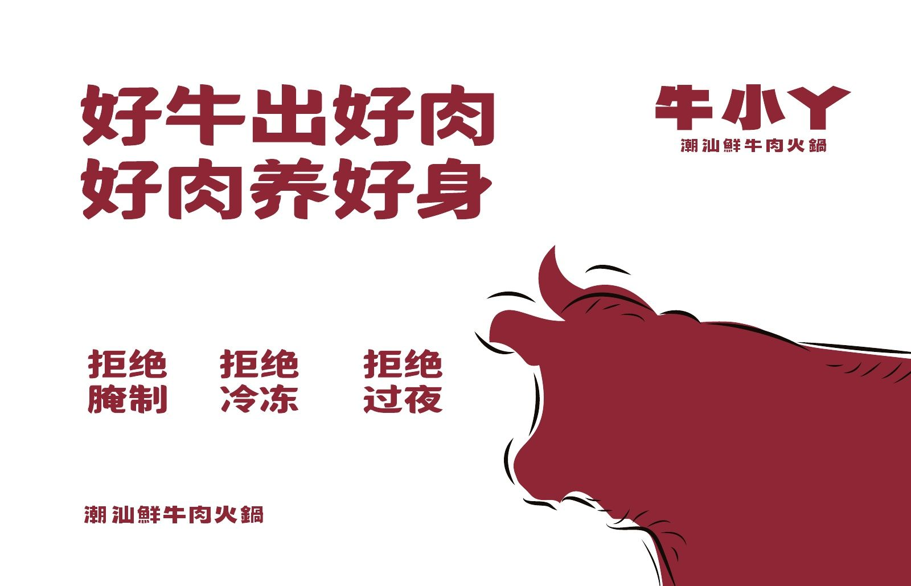
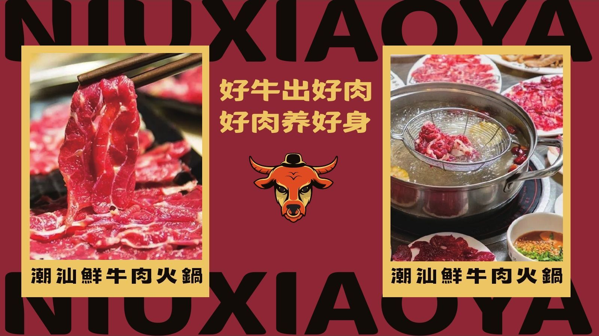
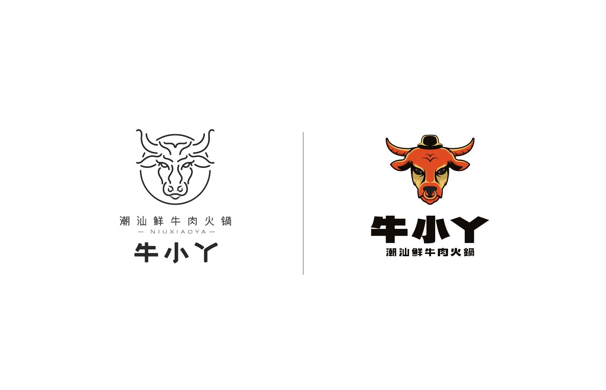